airfreight <-
tibble(
x = c(1, 0, 2, 0, 3, 1, 0, 1, 2, 0),
y = c(16, 9, 17, 12, 22, 13, 8, 15, 19, 11)
)Chapter Four HW
| i: | 1 | 2 | 3 | 4 | 5 | 6 | 7 | 8 | 9 | 10 |
|---|---|---|---|---|---|---|---|---|---|---|
| \(X_{i}\): | 1 | 0 | 2 | 0 | 3 | 1 | 0 | 1 | 2 | 0 |
| \(Y_{i}\): | 16 | 9 | 17 | 12 | 22 | 13 | 8 | 15 | 19 | 11 |
airfreight.lm <- lm(y ~ x, data = airfreight)airfreight.lm
Call:
lm(formula = y ~ x, data = airfreight)
Coefficients:
(Intercept) x
10.2 4.0 summary(airfreight.lm)
Call:
lm(formula = y ~ x, data = airfreight)
Residuals:
Min 1Q Median 3Q Max
-2.2 -1.2 0.3 0.8 1.8
Coefficients:
Estimate Std. Error t value Pr(>|t|)
(Intercept) 10.2000 0.6633 15.377 3.18e-07 ***
x 4.0000 0.4690 8.528 2.75e-05 ***
---
Signif. codes: 0 '***' 0.001 '**' 0.01 '*' 0.05 '.' 0.1 ' ' 1
Residual standard error: 1.483 on 8 degrees of freedom
Multiple R-squared: 0.9009, Adjusted R-squared: 0.8885
F-statistic: 72.73 on 1 and 8 DF, p-value: 2.749e-05Anova(airfreight.lm, type = "III")Anova Table (Type III tests)
Response: y
Sum Sq Df F value Pr(>F)
(Intercept) 520.2 1 236.454 3.178e-07 ***
x 160.0 1 72.727 2.749e-05 ***
Residuals 17.6 8
---
Signif. codes: 0 '***' 0.001 '**' 0.01 '*' 0.05 '.' 0.1 ' ' 13.5 Refer to Airfreight breakage Problem 1.21.
- Plot the residuals \(e_{i}\) against \(X_{i}\) to ascertain whether any departures from regression model (2.1) are evident. Wha tis your conclusion?
plot(residuals(airfreight.lm) ~ airfreight$x,
xlab = "Predictor", ylab = "Residual")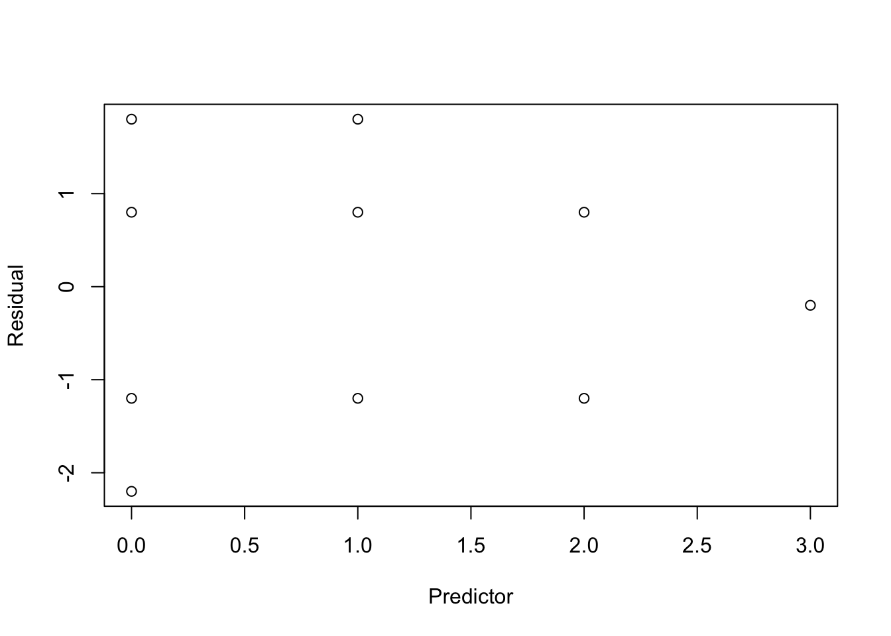
Plot of residuals against fitted values
plot(residuals(airfreight.lm) ~ fitted.values(airfreight.lm),
xlab = "Fitted value", ylab = "Residual")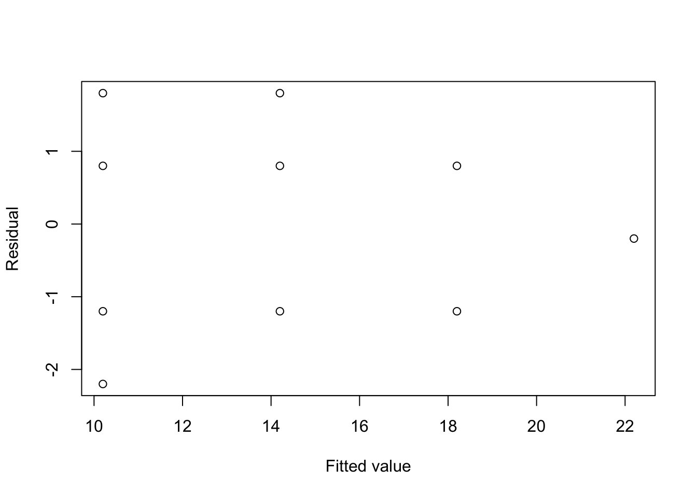
f. Prepare a time plot of the residuals. What information is provided by your plot?
Sequence plot of residuals
plot(airfreight.lm$residuals,
type = "l",
xlab = "Production run",
ylab = "Residual")
abline(h = 0)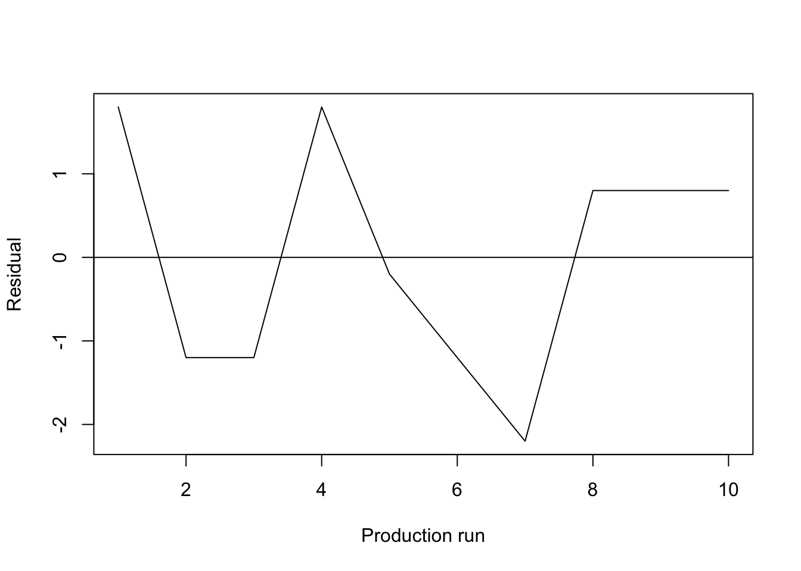
par(mfrow = c(2, 2))
plot(airfreight.lm)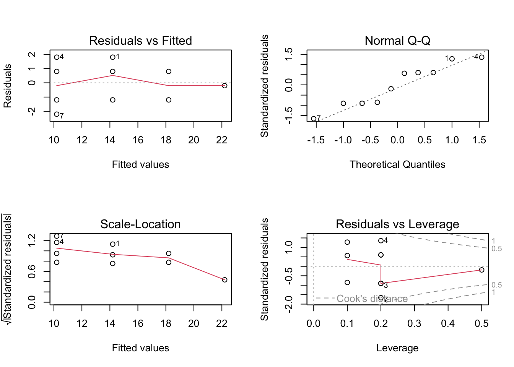
Plot of semistudentized residuals against fitted values
plot(airfreight.lm$residuals/summary(airfreight.lm)$sigma ~ airfreight.lm$fitted.values,
xlab = "Fitted value", ylab = "Semistudentized residual")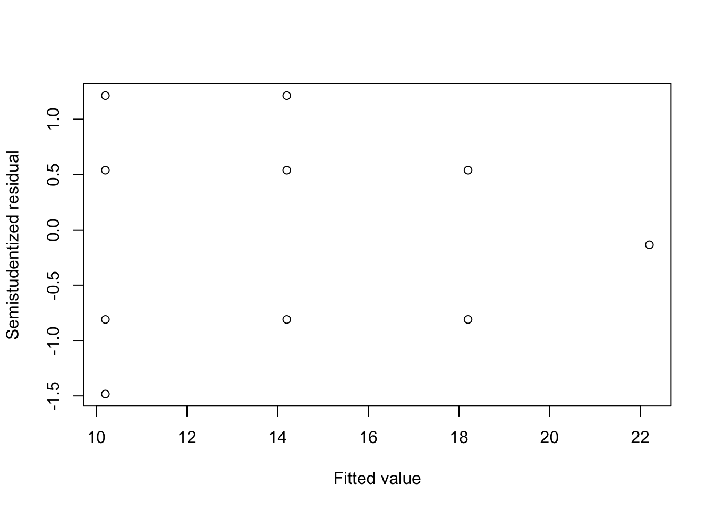
Normal probability plot of residuals
qqnorm(airfreight.lm$residuals,
main = "Normal Q-Q plot of residuals")
qqline(airfreight.lm$residuals)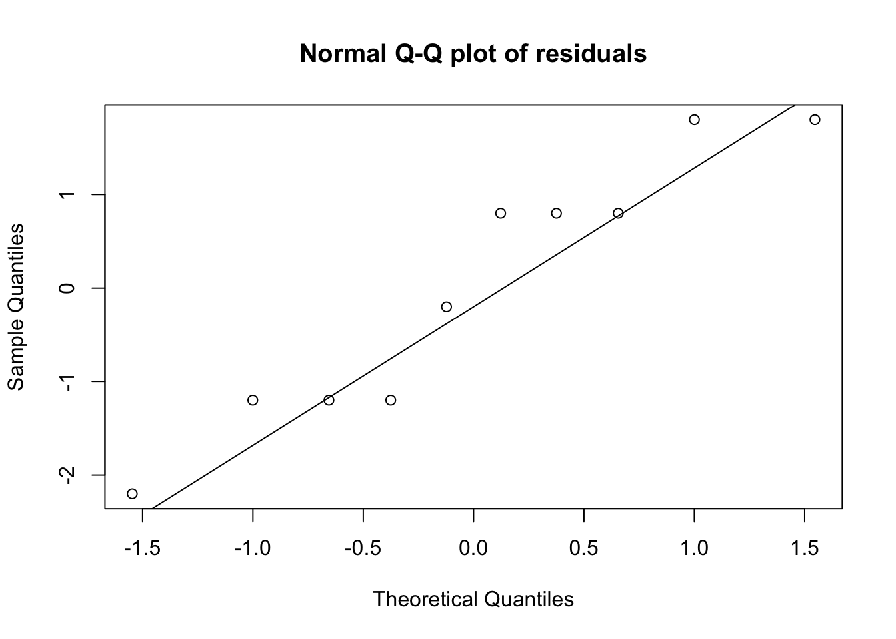
d. Plot the residuals \(\e_{i}\) against \(X_{i}\) to ascertain whether any departures from regression model (21.) are evident. What is your conclusion?
par(mfrow = c(2,2))
plot(airfreight.lm)
f. Prepare a time plot of the residuals. what information is provided by your plot?
3.13 Refer to Copier maintenance Problem 1.20.
copier <- read.csv("Copier.csv")copier Y X
1 20 2
2 60 4
3 46 3
4 41 2
5 12 1
6 137 10
7 68 5
8 89 5
9 4 1
10 32 2
11 144 9
12 156 10
13 93 6
14 36 3
15 72 4
16 100 8
17 105 7
18 131 8
19 127 10
20 57 4
21 66 5
22 101 7
23 109 7
24 74 5
25 134 9
26 112 7
27 18 2
28 73 5
29 111 7
30 96 6
31 123 8
32 90 5
33 20 2
34 28 2
35 3 1
36 57 4
37 86 5
38 132 9
39 112 7
40 27 1
41 131 9
42 34 2
43 27 2
44 61 4
45 77 5a. What are the alternative conclusions when testing for lack of fit of a linear regression function?
The alternative conclusions when testing for a lack of fit of a linear regression function are the following:
- The regression of the function is not linear.
- The error terms do not have a constant variance.
- The error terms are not independent.
- The model fits all but one or a few outlier observations.
- The error terms are not normally distrusted.
- One or several important predictor variables have been omitted from the model.
Nonlinearity of Regression Function Nonconstancy of error variance Presence of Outliers Nonindependence of error terms
\(H_{0}: E{Y} = \beta_{0} + \beta_{1} X\) \(H_{a}: E{Y} \neq \beta_{0} + \beta_{1} X\)
b. Perform the test indicated in part (a). Control the risk of Type I error at 0.05. State the decision rule and conclusion.
copier.lm <- lm(Y ~ X, data = copier)
plot(Y ~ X, data = copier)
abline(copier.lm, col="red")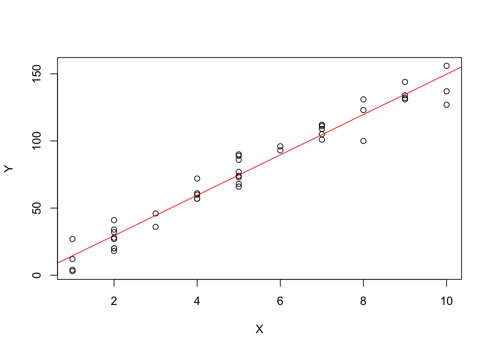
F-test for lack of fit
anova(copier.lm, lm(Y ~ factor(X), data = copier))Analysis of Variance Table
Model 1: Y ~ X
Model 2: Y ~ factor(X)
Res.Df RSS Df Sum of Sq F Pr(>F)
1 43 3416.4
2 35 2797.7 8 618.72 0.9676 0.4766anova(copier.lm, data = copier)Warning in anova.lmlist(object, ...): models with response '"NULL"' removed
because response differs from model 1Analysis of Variance Table
Response: Y
Df Sum Sq Mean Sq F value Pr(>F)
X 1 76960 76960 968.66 < 2.2e-16 ***
Residuals 43 3416 79
---
Signif. codes: 0 '***' 0.001 '**' 0.01 '*' 0.05 '.' 0.1 ' ' 1RSS = SSPE = 2797.7 Sum of Sq = SSLF = 618.72
\(F^{*} = (SSLF/c - 2) / (SSPE / n - c) = MSLF / MSPE\)
\(F^{*} = (618.719/8) / (2797.66 / 35) = 0.967557\)
\(F(0.95; 8; 35) = 2.21668\)
If \(F^{*} \leq 2.21668\), conclude \(H_{0}\), otherwise \(H_{a}\). Conclude \(H_{0}\)
\(SSPE = \sum\sum (Y_{ij} - \hat Y_{j})^2\) \(df = n - c\) \(MSLF = SSLF/c - 2\) Number of groups minus 2
\(SSLF = \sum\sum (\hat Y_{j} - \hat Y_{ij})^2\) \(df = c - 2\) \(MSPE = SSPE/n - c\) Total observations minus number of groups
c. Sales growth. A marketing researcher studied annual sales of a product that had been introduced 10 years ago. The data are as follows, where \(X\) is the year (coded) and \(Y\) is sales in thousands of units:
| i: | 1 | 2 | 3 | 4 | 5 | 6 | 7 | 8 | 9 | 10 |
|---|---|---|---|---|---|---|---|---|---|---|
| \(X_{i}\): | 0 | 1 | 2 | 3 | 4 | 5 | 6 | 7 | 8 | 9 |
| \(Y_{i}\): | 98 | 135 | 162 | 178 | 221 | 232 | 283 | 300 | 374 | 395 |
sales <-
data.frame(
x = c(0, 1, 2, 3, 4, 5, 6, 7, 8, 9),
y = c(98, 135, 162, 178, 221, 232, 283, 300, 374, 395)
)sales x y
1 0 98
2 1 135
3 2 162
4 3 178
5 4 221
6 5 232
7 6 283
8 7 300
9 8 374
10 9 395a. Prepare a scatter plot of the data. Does a linear relation appear to be accurate?
sales.lm <- lm(y ~ x, data = sales)plot(y ~ x, data = sales)
abline(sales.lm, col="red")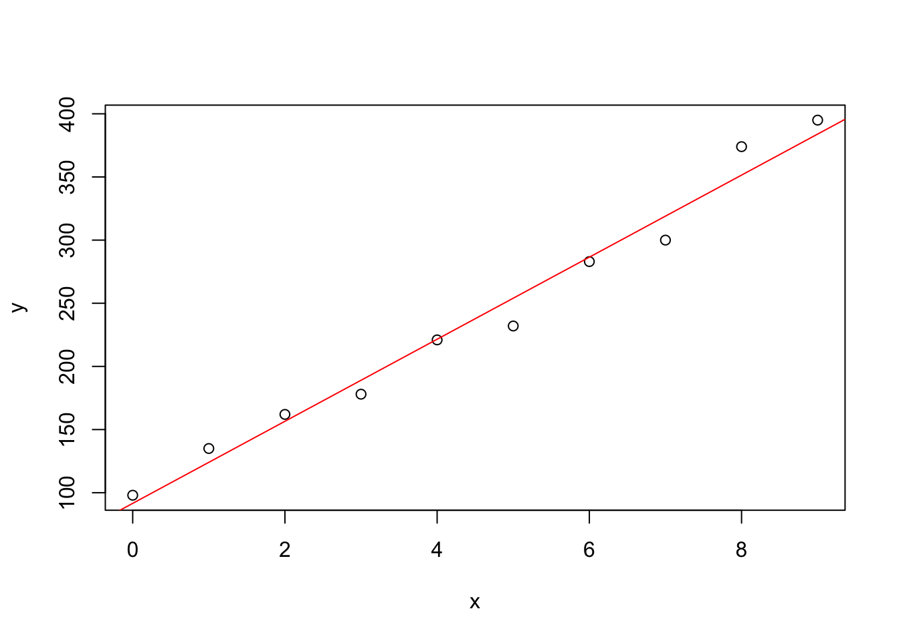
b. Use the Box-Cox procedure and standardization (3.36) to find an appropriate power transformation of \(Y\). Evaluate \(SSE\) for \(\lambda = 0.3, 0.4, 0.5, 0.6, 0.7\).
What transformation of Y is suggested?
Transformations on Y
Box-Cox transformation
boxcox.sse(sales[,1],sales[,2],l=seq(-2,1,0.1))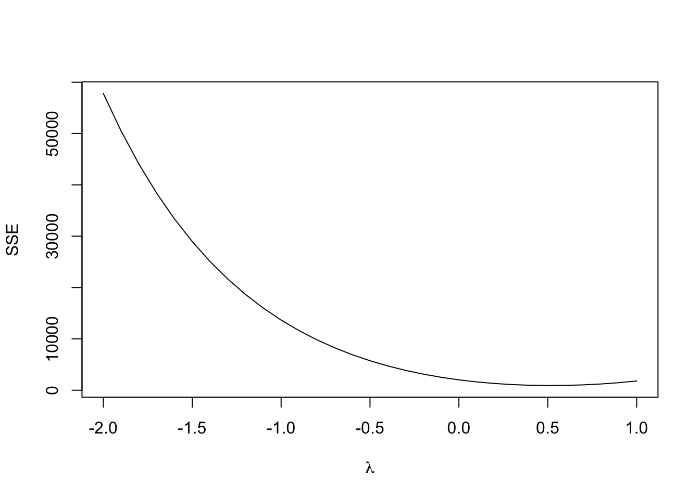
lambda SSE
1 -2.0 57788.3511
2 -1.9 50489.6939
3 -1.8 44054.1816
4 -1.7 38379.8733
5 -1.6 33377.2323
6 -1.5 28967.6103
7 -1.4 25081.9206
8 -1.3 21659.4777
9 -1.2 18646.9811
10 -1.1 15997.6263
11 -1.0 13670.3269
12 -0.9 11629.0334
13 -0.8 9842.1378
14 -0.7 8281.9520
15 -0.6 6924.2528
16 -0.5 5747.8831
17 -0.4 4734.4047
18 -0.3 3867.7951
19 -0.2 3134.1829
20 -0.1 2521.6190
31 0.0 2019.8767
21 0.1 1620.2804
22 0.2 1315.5569
23 0.3 1099.7093
24 0.4 967.9088
25 0.5 916.4048
26 0.6 942.4498
27 0.7 1044.2384
28 0.8 1220.8598
29 0.9 1472.2614
30 1.0 1799.2242| : | 0.3 | 0.4 | 0.5 | 0.6 | 0.7 |
|---|---|---|---|---|---|
| \(SSE\): | 1099.7 | 967.9 | 916.4 | 942.4 | 1044.2 |
c. Use the transformation \(Y' = \sqrt Y\) and obtain the estimated linear regression function for the transformed data.
plot(y ~ x, data = sales)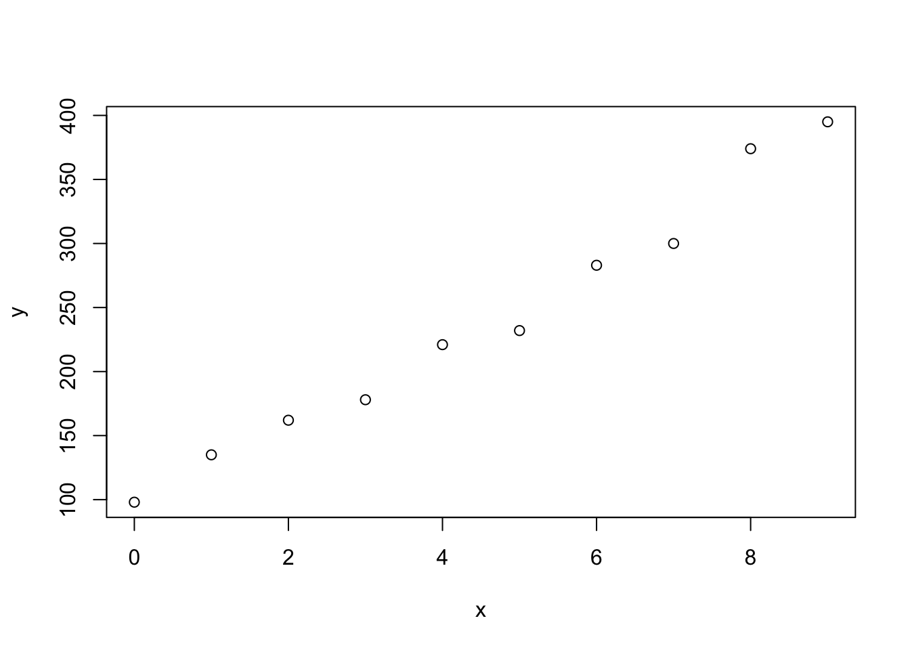
sales.lm_sqrt <- lm(sqrt(y) ~ x, data = sales)plot(sqrt(y) ~ x, data = sales)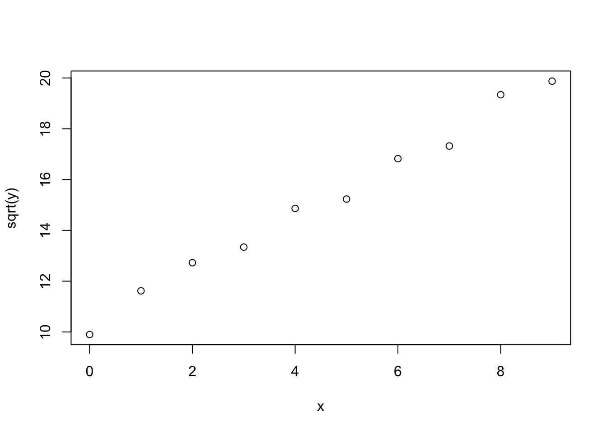
par(mfrow = c(2, 2))
plot(sales.lm_sqrt)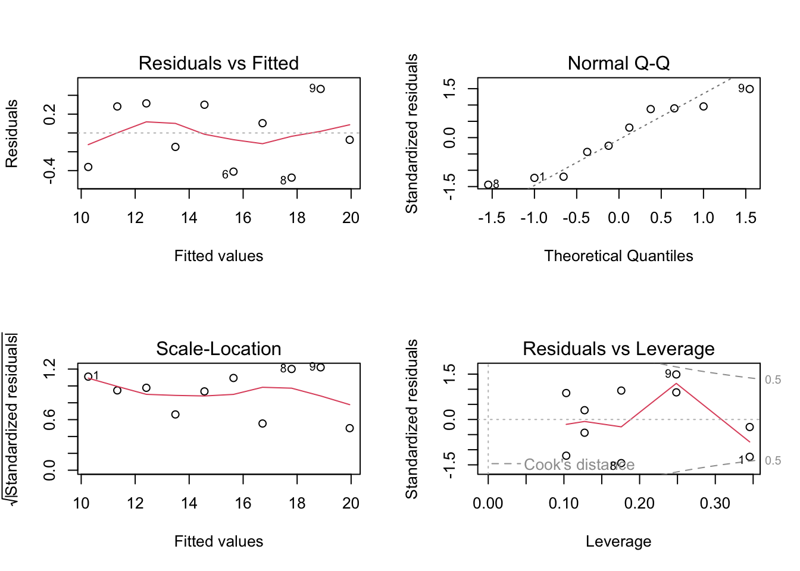
summary(sales.lm_sqrt)
Call:
lm(formula = sqrt(y) ~ x, data = sales)
Residuals:
Min 1Q Median 3Q Max
-0.47447 -0.30811 0.01549 0.29541 0.46781
Coefficients:
Estimate Std. Error t value Pr(>|t|)
(Intercept) 10.26093 0.21290 48.20 3.80e-11 ***
x 1.07629 0.03988 26.99 3.83e-09 ***
---
Signif. codes: 0 '***' 0.001 '**' 0.01 '*' 0.05 '.' 0.1 ' ' 1
Residual standard error: 0.3622 on 8 degrees of freedom
Multiple R-squared: 0.9891, Adjusted R-squared: 0.9878
F-statistic: 728.4 on 1 and 8 DF, p-value: 3.826e-09\(Y = 1.07629X + 10.26093\)
plot(sales.lm$residuals ~ sales$x, xlab = "x", ylab = "Residual")
abline(h = 0)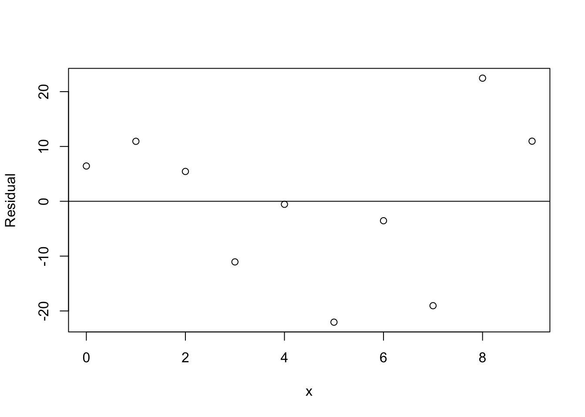
plot(sales.lm$residuals ~ sales$x, xlab = "x", ylab = "Residual")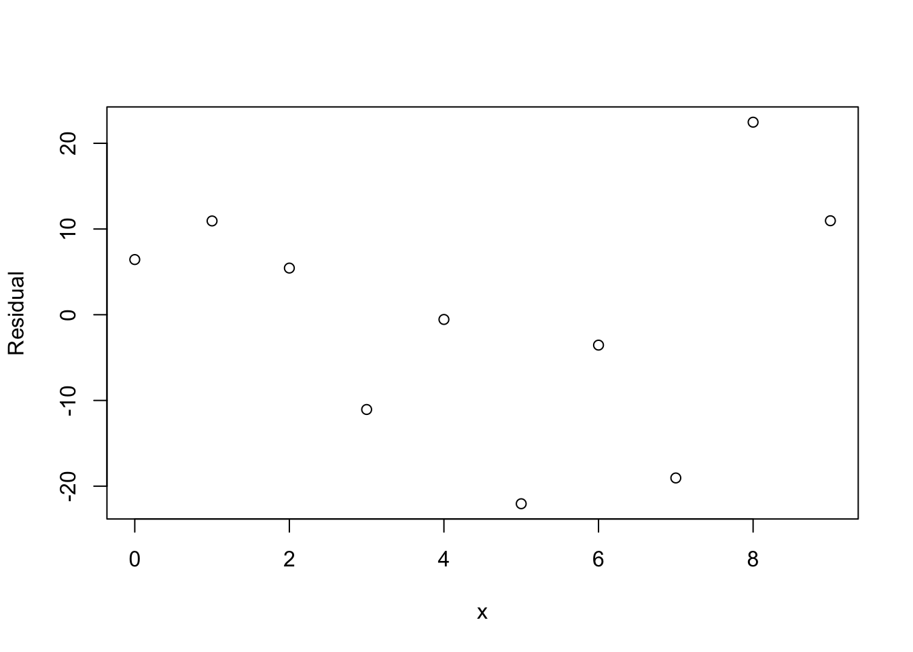
plot(sales.lm$residuals ~ sales.lm$fitted.values,
xlab = "Fitted value", ylab = "Residual")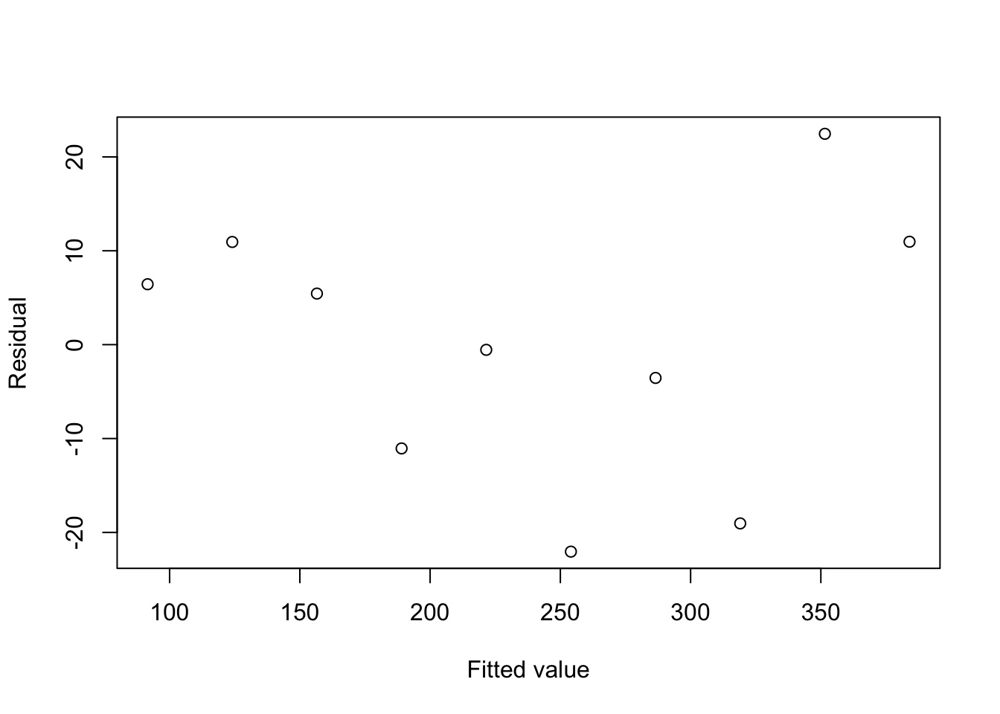
d. Plot the estimated regression line and transformed data. Does the regression line appear to be a good fit to the transformed data?
plot(sqrt(y) ~ x, data = sales)
e. Obtain the residuals and plot them against the fitted values. Also prepare a normal probability plot. What do your plots show?
Residuals
sales.lm_sqrt$residuals 1 2 3 4 5 6
-0.36143656 0.28172678 0.31440703 -0.14814273 0.29997018 -0.41084412
7 8 9 10
0.10392174 -0.47446579 0.46781397 -0.07295049 Plot of residuals against fitted values
plot(residuals(sales.lm_sqrt) ~ fitted.values(sales.lm_sqrt),
xlab = "Fitted value", ylab = "Residual")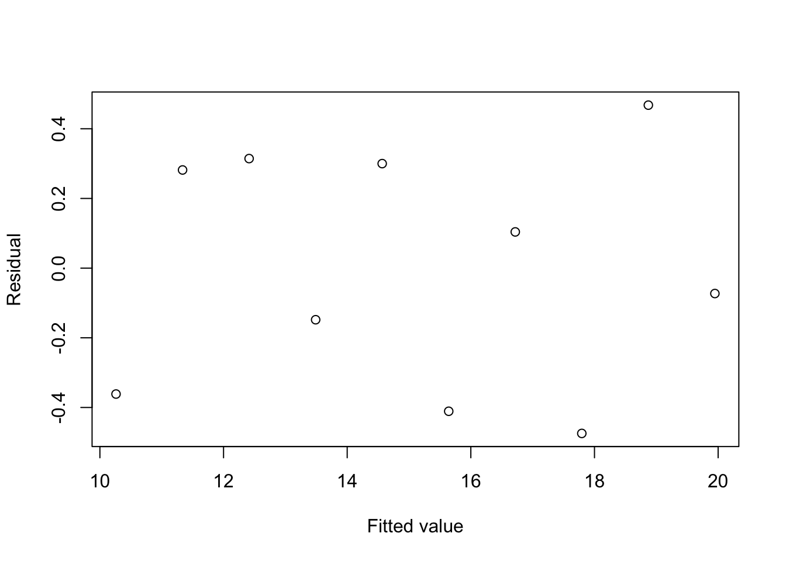
fitted.values(sales.lm_sqrt) 1 2 3 4 5 6 7 8
10.26093 11.33722 12.41352 13.48981 14.56610 15.64239 16.71868 17.79497
9 10
18.87127 19.94756 expected <- data.frame(actual = sales$y, predicted = predict(sales.lm_sqrt))
expected actual predicted
1 98 10.26093
2 135 11.33722
3 162 12.41352
4 178 13.48981
5 221 14.56610
6 232 15.64239
7 283 16.71868
8 300 17.79497
9 374 18.87127
10 395 19.94756sales$Pred <- fitted(sales.lm_sqrt)sales$Pred [1] 10.26093 11.33722 12.41352 13.48981 14.56610 15.64239 16.71868 17.79497
[9] 18.87127 19.94756sales$Resid <- sales$y - sales$Predsales$Resid [1] 87.73907 123.66278 149.58648 164.51019 206.43390 216.35761 266.28132
[8] 282.20503 355.12873 375.05244sales.sqrt_qq <- qqnorm(sales.lm_sqrt$residuals, main = "Normal Q-Q plot of residuals")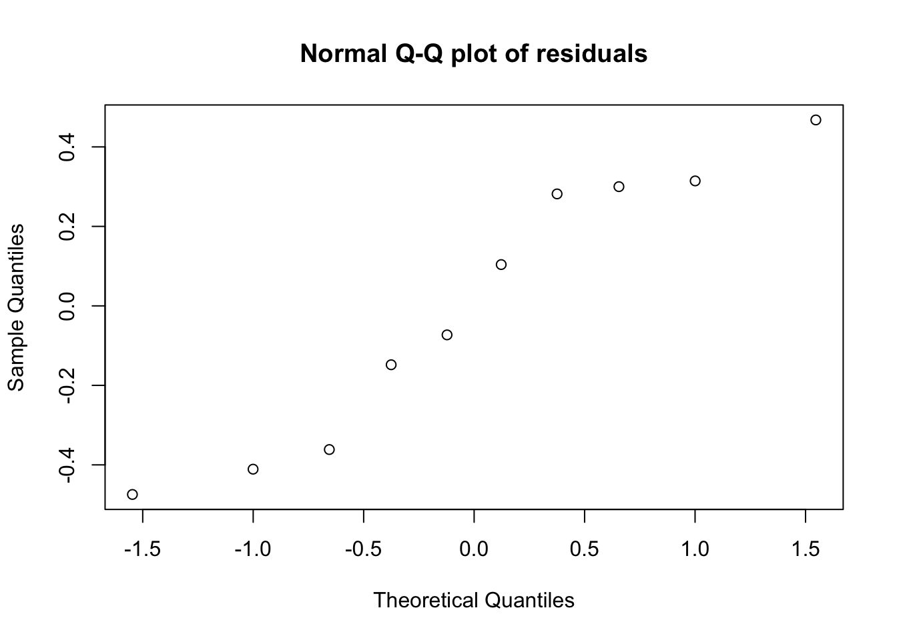
| \(i\): | 1 | 2 | 3 | 4 | 5 |
|---|---|---|---|---|---|
| \(e_{i}\): | -0.36 | 0.28 | 0.31 | -0.15 | 0.30 |
| \(\hat Y_{i}^{'}\): | 10.26 | 11.34 | 12.41 | 13.49 | 14.57 |
| Expected value: | -0.24 | 0.14 | 0.36 | -0.14 | 0.24 |
| \(i\): | 6 | 7 | 8 | 9 | 10 |
|---|---|---|---|---|---|
| \(e_{i}\): | -0.41 | 0.10 | 0.47 | 0.47 | -0.07 |
| \(\hat Y_{i}^{'}\): | 15.64 | 16.72 | 17.79 | 18.87 | 19.95 |
| Expected value: | -0.36 | 0.04 | -0.56 | 0.56 | -0.04 |
f. Express the estimated regression function in original units.
\(Y = (1.07629X + 10.26093)^{2}\)